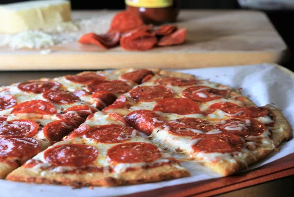

Keto Pepperoni Pizza with Fathead Crust

Description
Even though this pizza is low-carb and keto-friendly, the whole family will devour it! It's also made without cream cheese! You can switch out the toppings for whatever you prefer. Note that the yeast is added solely for bread-like flavor in this recipe and not as a raising agent, since there is no sugar present to activate the yeast. Use your favorite no-sugar-added pizza sauce or marinara sauce. I highly recommend shredding your own mozzarella as the bagged variety doesn't melt well.
Ingredients
- 2 teaspoons yeast
- 2 tablespoons warm water
- 3 cups shredded part-skim mozzarella cheese, divided
- 1 large egg, lightly beaten
- 1 teaspoon xanthan gum
- 1/8 teaspoon salt
- 1/4 cup no sugar added pizza sauce
- 2 ounces sliced pepperoni
- 1 pinch red pepper flakes to taste (optional)
Steps
- Preheat the oven to 375 degrees F (190 degrees C). Line a baking sheet with parchment paper.
- Mix yeast into warm water in a small cup, stirring to dissolve. Set aside.
- Place 1 1/2 cups mozzarella cheese into a medium microwave-safe bowl. Microwave for 90 seconds, stirring every 30 seconds until completely melted. Stir in the yeast mixture and egg; stir to combine. The mixture will not incorporate well at this point.
- Stir in almond flour, xanthan gum, and salt. If difficult to mix, reheat in the microwave for 20-30 seconds to soften the cheese. Stir again until well incorporated. Knead dough by hand for 2 minutes.
- Place dough on the prepared baking sheet and press with your fingers into a thin crust 11 to 12 inches in diameter.
- Bake in the preheated oven until lightly browned, about 10 minutes. Spread pizza sauce over pizza. Top with remaining 1 1/2 cups mozzarella cheese, then scatter pepperoni on top.
- Return to the oven and bake until cheese is melted, about 5 minutes more. Sprinkle with red pepper flakes. Cut into 6 slices.